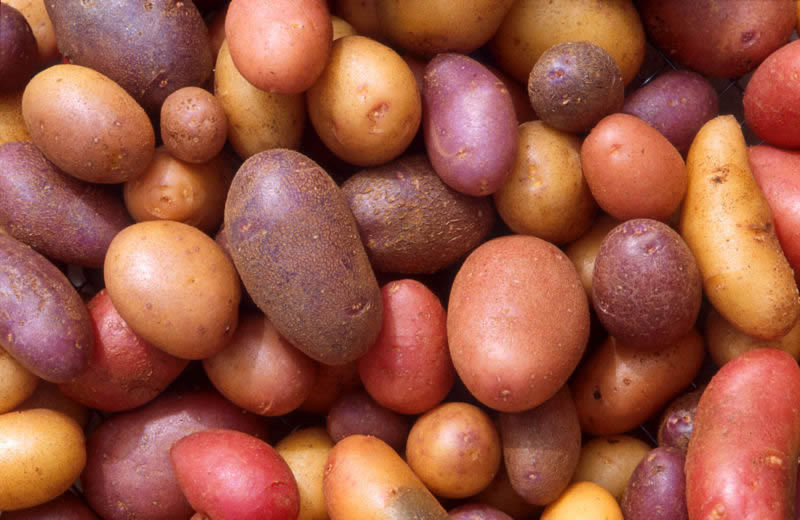

| |
| Carrots |
| Twinkies |
| Avocado |
| Pineapple |
| Turkey Sandwiches |
| Mangoes |
| Pizza |
| Potatoes |
| Other Resources |
Have you ever found a potato that was starting to grow little white sprouts? Follow these directions, and you can grow that old sprouting potato into a real live potato plant! There are a few different ways you can grow a potato plant. You can do the same thing you do with an avocado seed, you can plant whole potatoes in a container of soil, or you can plant pieces of potato. You cannot grow a potato plant by burying your french fries. You’ll need a pretty big container to grow a potato plant, especially if you want to grow new little potatoes. Find one that’s at least 6 inches across and 18 inches deep. (If you can’t find one that big, use the other planting method below.) Fill it about halfway with soil. The potato you use to start with should already have some little buds sprouting from it. Nowadays, a lot of farmers spray their potatoes with stuff that stops them from sprouting, so not all potatoes will work for this. Put the potato in the soil and cover it about an inch deep. Water until it’s just slightly damp--any more and it will get gross and rot. Put it in a warm, sunny spot. You can also try using pieces of potato. Have a grown-up cut the potato into chunks so each piece has about 3 sprouts. Let the pieces dry overnight. For this method, you can use a smaller container--like a half-gallon milk carton or 2 liter soda bottle. Fill the container with soil a couple of inches from the top. Put the potato pieces in the soil with the sprouts pointing up and cover with about 3 inches of soil. Water until just damp, and wait a week or so for your potato plant!
|
A potato that has begun to sprout roots and stems
(Creative Commons Attribution ShareAlike 2.0 License Wikimedia user donnamarijne)
Did you know potatoes came in so many colors?
Public Domain, USDA)
Tractors in a potato field
(Creative Commons Attribution 2.0 License Wikimedia user NightThree)